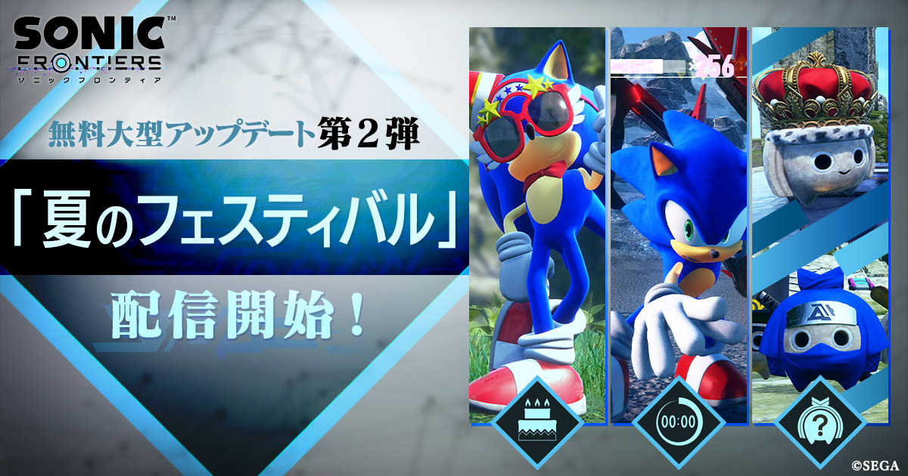

INFORMATION
無料大型アップデート第2弾「夏のフェスティバル」配信開始！
2023.06.24

ソニック最新作『ソニックフロンティア』無料大型アップデート第２弾「夏のフェスティバル」を配信開始いたしました！
本アップデートでは「誕生日デコレーション」や「アクションチェイン チャレンジ」「強いままニューゲーム」など様々な新要素がもりだくさん！
まだまだ新しい遊び方が広がる『ソニックフロンティア』を、ぜひお楽しみください。
【誕生日デコレーション】
島の雰囲気やソニックが身につけるコスチュームを、ソニックの誕生日仕様に変更できる機能を追加しました。
【アクションチェイン チャレンジ】
スターフォール諸島に広がる「オープンゾーン」を使ったスコアアタックが楽しめる、新たなやり込み要素が登場！ 最高スコアを目指してぜひチャレンジしてください。
【スキル「スピンダッシュ」】
ある条件を満たすと、ソニックの新アクション「スピンダッシュ」がアンロックされます。「スピンダッシュ」は、スピン状態で敵を蹴散らしながら進めるスピードアクションです。よりスピーディな冒険が楽しめるようになりますので、ぜひ解放条件を探してみてください！
【新種ココ】
スターフォール諸島に住む不思議な生き物「ココ」の新種を探すコンテンツを追加しました。新種のココを長老ココに渡すと、ソニックのブーストゲージが成長します。
【ステータスマップ】
「守護神の撃破数」や「ポータルのミッションクリア数」など、さまざまな要素のやり込み具合を島間の移動中画面や島選択画面、島クリア時に表示する機能を追加しました。
【フロンティアマスターの衣装】
さまざまな要素をやり込むと、とっておきのご褒美「フロンティアマスターの衣装」がプレゼントされます。『ソニックフロンティア』をとことん楽しんで、特別なご褒美をぜひ手に入れてください。
【強いままニューゲーム】
ゲーム本編クリア後に、クリアデータの作成が行えるようになりました。クリアデータ作成後にタイトル画面に追加される「強いままニューゲーム」を選択すると、スキルとパワーアップレベルを引き継いだまま、はじめからゲームをスタートすることができます。
【さまざまな機能の追加】
『ソニックフロンティア』をプレイ頂いたユーザーのみなさまのご意見などを参考に、以下の調整を行いました。
本アップデートでは「誕生日デコレーション」や「アクションチェイン チャレンジ」「強いままニューゲーム」など様々な新要素がもりだくさん！
まだまだ新しい遊び方が広がる『ソニックフロンティア』を、ぜひお楽しみください。
【誕生日デコレーション】
島の雰囲気やソニックが身につけるコスチュームを、ソニックの誕生日仕様に変更できる機能を追加しました。
【アクションチェイン チャレンジ】
スターフォール諸島に広がる「オープンゾーン」を使ったスコアアタックが楽しめる、新たなやり込み要素が登場！ 最高スコアを目指してぜひチャレンジしてください。
【スキル「スピンダッシュ」】
ある条件を満たすと、ソニックの新アクション「スピンダッシュ」がアンロックされます。「スピンダッシュ」は、スピン状態で敵を蹴散らしながら進めるスピードアクションです。よりスピーディな冒険が楽しめるようになりますので、ぜひ解放条件を探してみてください！
【新種ココ】
スターフォール諸島に住む不思議な生き物「ココ」の新種を探すコンテンツを追加しました。新種のココを長老ココに渡すと、ソニックのブーストゲージが成長します。
【ステータスマップ】
「守護神の撃破数」や「ポータルのミッションクリア数」など、さまざまな要素のやり込み具合を島間の移動中画面や島選択画面、島クリア時に表示する機能を追加しました。
【フロンティアマスターの衣装】
さまざまな要素をやり込むと、とっておきのご褒美「フロンティアマスターの衣装」がプレゼントされます。『ソニックフロンティア』をとことん楽しんで、特別なご褒美をぜひ手に入れてください。
【強いままニューゲーム】
ゲーム本編クリア後に、クリアデータの作成が行えるようになりました。クリアデータ作成後にタイトル画面に追加される「強いままニューゲーム」を選択すると、スキルとパワーアップレベルを引き継いだまま、はじめからゲームをスタートすることができます。
【さまざまな機能の追加】
『ソニックフロンティア』をプレイ頂いたユーザーのみなさまのご意見などを参考に、以下の調整を行いました。
- ・ジャンプ時の減速率を変更できる機能を追加
- ・エクストラコンテンツが新規追加された際に、アイコンが表示される機能を追加
- ・電脳空間で「BGM変化」機能をON／OFFできる機能を追加
- ・難易度エンジョイを選択時にレイア島の塔の攻略の難易度を調整
- ・電脳空間リザルトにて、追加アクション・機能使用時のマーク表示対応（追加アクション・機能を使ってクリアした際にアイコンが付記される）
- ・アーケードモード／電脳空間チャレンジ／バトルラッシュのクリアタイムおよびランクをリセットする機能を追加
- ・スキル技専用カメラのON／OFFが、プレイスタイルの好みで選択可能に
- ・ソニックが停止するまでの慣性を調整するオプション設定を追加
- ・ブースト時、空中に飛んだ際のブースト維持力をON／OFFするオプション設定を追加
- ・ジュークボックスで再生できる楽曲を24曲追加／各島にサウンドメモリーを追加
- ・既知の不具合の修正